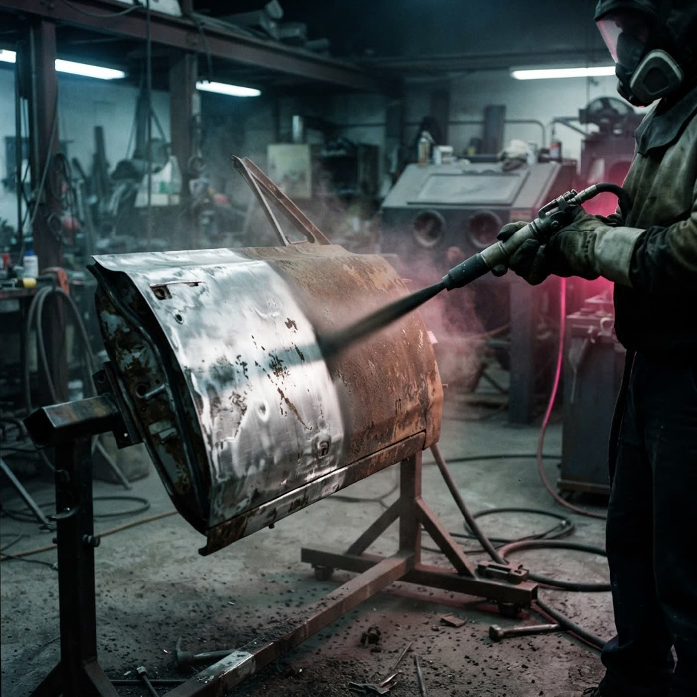

Ржавчина уходит до металла
Пескоструй кузова и днища авто любой марки в Фаниполе. Очистка дисков, подвески, двигателя, нанесение грунта после очистки и антикор, включая скрытые полости.
Пять зон, где живёт ржавчина
Работаем с кузовом и днищем любого автомобиля: легковые, паркетники, микроавтобусы. Каждая зона чистится под свой инструмент и давление.
Кузов
Старая краска, ржавчина, окалина уходят до чистого металла — поверхность готова под покраску или грунт.
Днище
Самая востребованная услуга: снимаем ржавчину и старый антикор, открываем металл и наносим новый защитный слой.
Диски
Очистка колёсных дисков от нагара, краски и коррозии — с сохранением геометрии и поверхности.
Подвеска и двигатель
Очищаем узлы подвески и двигатель от грязи, масла и окалины — удобно перед ремонтом или диагностикой.
Грунт и антикор
После очистки сразу наносим грунт, а затем антикоррозийное покрытие, включая скрытые полости.
Металл нельзя оставить голым
Чистая поверхность начинает корродировать почти сразу. Поэтому очистка и защита идут одним заходом — три этапа, без «приезжайте потом».
Очистка
Абразив под давлением снимает краску, ржавчину, окалину и старый антикор до металла.
Грунт
Сразу после очистки — защитный грунт: он держится на чистом металле, а не на ржавчине.
ключевой этапАнтикор
Антикоррозийное покрытие кузова и днища, включая скрытые полости, где влага остаётся дольше всего.
Сравнение с тем, что делают «по-быстрому»
Пескоструй — это не «помыть керхером» и не «зачистить болгаркой». Разница видна на второй год эксплуатации.
| Параметр | Пескоструй | Щётка / химия |
|---|---|---|
| Глубина очистки | до чистого металла | только видимый слой |
| Ржавчина в порах | выбивается абразивом | остаётся под покрытием |
| Скрытые полости | обрабатываем отдельно | обычно не трогают |
| Подготовка под покраску | полная, без доработок | нужна дополнительная зачистка |
| Срок службы покрытия | дольше: держится на металле | короче: держится на ржавчине |

Сжатый воздух плюс абразив
Пескоструйная обработка — метод очистки поверхности от старой краски, ржавчины, окалины и загрязнений сжатым воздухом, который подаёт абразивный материал. Под давлением абразив удаляет слой загрязнений, оставляя чистую металлическую поверхность, готовую к покраске или антикоррозийному покрытию.
Подготовка
Машину размещают, закрывают стёкла и уязвимые узлы, зону работы изолируют.
Подача абразива
Сжатый воздух подаёт абразивный материал на поверхность под давлением — слой за слоем.
Чистый металл
Краска, ржавчина и окалина уходят, остаётся поверхность, готовая к грунту и покраске.
Перед записью
Не нашли ответ — наберите номер, сориентируем по цене и срокам.